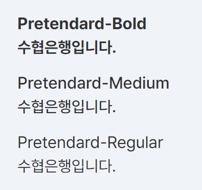
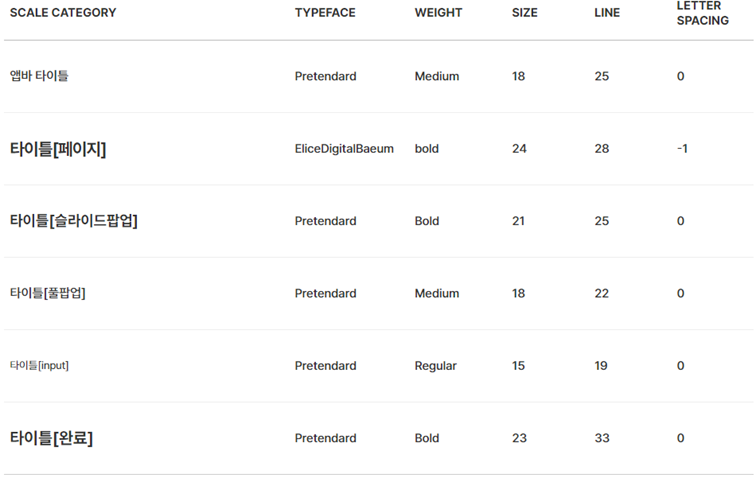
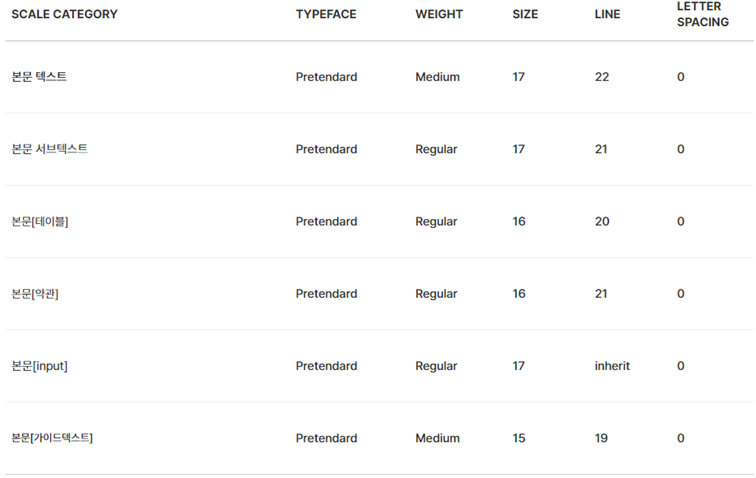

- Foundation
- Typography
- Iconography
- Colors
- Illustration
- Motion
- Validation
- Writing
Typography
- Definition
- 해당 앱에 사용되는 서체는 엘리스디지털배움과 프리텐다드 폰트 총 2종류의 서체를 사용한다.
엘리스디지털배움체는 타이틀 및 일부 강조성 컨텐츠 정보에 사용하고, 그 외의 모든 서체는 프리텐다드체를 사용한다.
엘리스디지털배움체는 Bold, Regular 두타입의 Family서체를 사용하고,
프리텐다드체는 Bold, Medium, Regular 세타입의 Family서체를 사용하고, 프리텐다드체 Medium를 기본폰트로 사용한다.

- 
- Title Font
- 해당 앱에서 사용하는 타이틀 종류 중 페이지 타이틀 및 강조 콘텐츠성 정보에는 엘리스디지털배움체를 사용한다.
그 외의 모든 타이틀은 프리텐다드체를 사용한다.

- Body Font
- 해당 앱에서 사용하는 본문과 컴포넌트에는 프리텐다드체를 사용한다.
